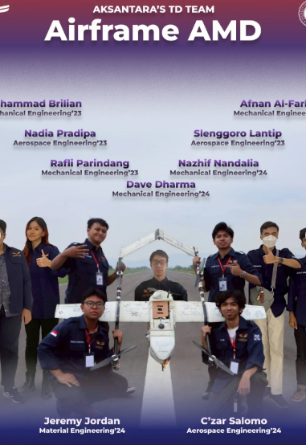
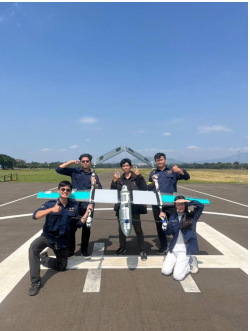

Rekam Jejak Prestasi
Penghargaan & Kompetisi
Dokumentasi piala dan sertifikat kompetisi nasional bidang robotika terbang dan rekayasa perpipaan industri.

Juara 1 — KRTI 2025
Kontes Robot Terbang Indonesia (KRTI) divisi Technology Development (Airframe Project) bersama tim Aksantara ITB.

Juara 1 — MEDCOM UGM 2025
Lomba Desain Perpipaan Nasional Universitas Gadjah Mada (UGM). Desain gas gathering piping system & pig receiver ASME B31.8.

Juara 2 — KRTI 2024
Kontes Robot Terbang Indonesia (KRTI) divisi Technology Development (Airframe Project) bersama tim Aksantara ITB.